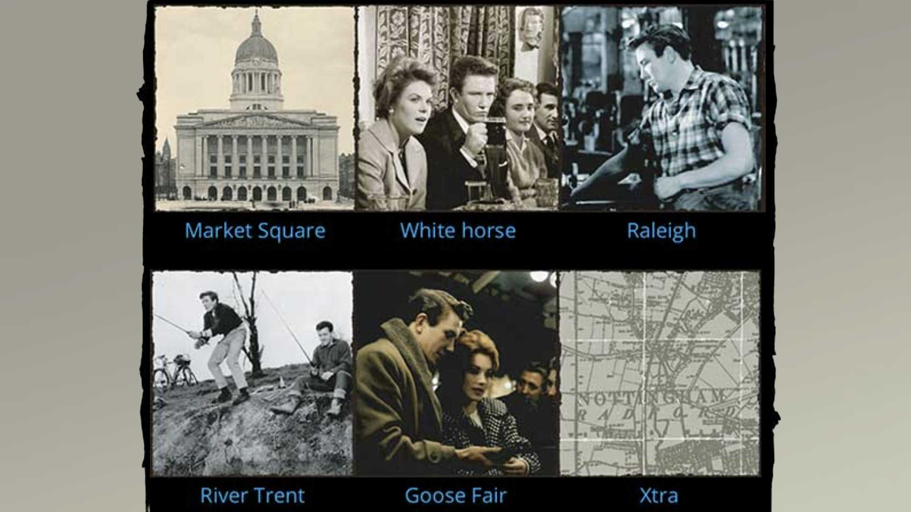
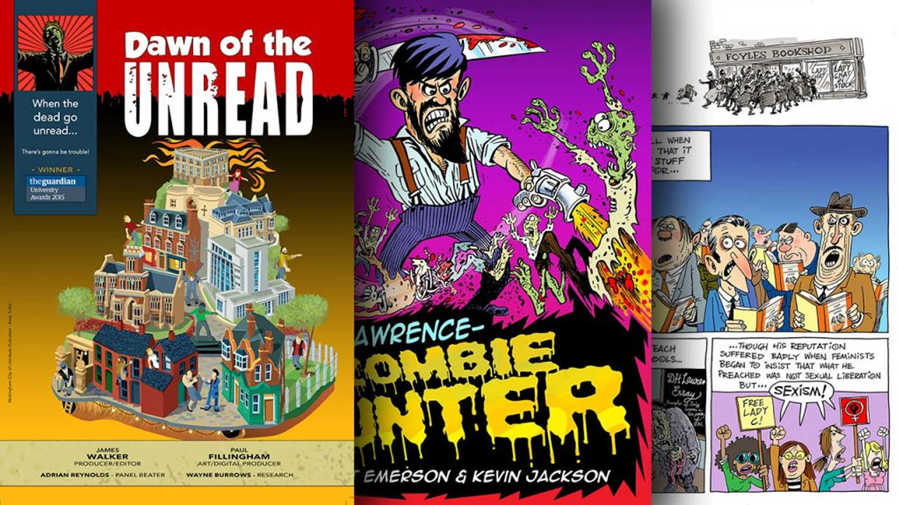
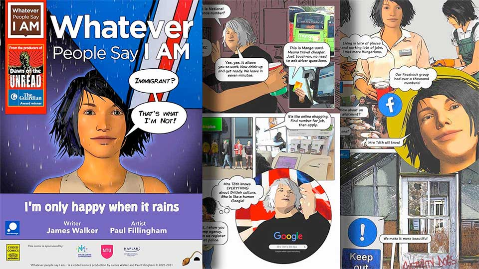
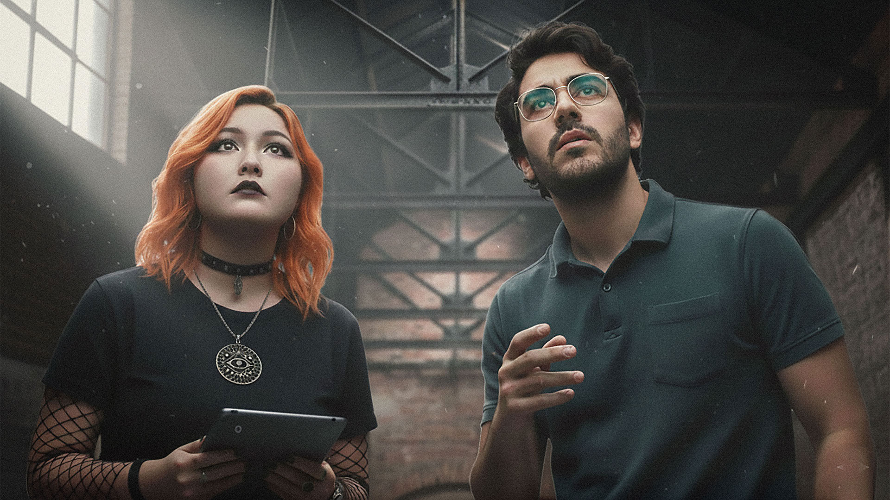

Storytelling
Award-winning digital arts
Digital storytelling platforms, developed with the support of Arts Council England, the BBC, and Nottingham Trent University have helped hundreds of students and creative practitioners find their unique voices and contribute to Nottinghamshire's cultural landscape.
These literary projects have largely been a result of a creative partnership with writer and educator James Walker. Since meeting at the Nottingham Writers Studio in 2010, we have spent over a decade shaping the landscape of digital storytelling in the region and celebrating the literary greats that are connected with Nottinghamshire.
Our efforts won The Guardian Award for teaching excellence in 2015, and later helped secure UNESCO City of Literature status for Nottingham. Projects like the zombie-genre digital comic 'Dawn of the Unread' which was aimed at reluctant reader, or 'Sillitoe Trail', a modern, digital reimagining of the 1959 working class classic 'Saturday Night and Sunday Morning' have been augmented with video content, live events and workshops.
These innovative platforms, centred around Nottinghamshire's iconic rebel writers, have sparked a great deal of interest in our literary heritage, attracting interest from national radio and television, the press, The British Library and academic institutions involved in Arts and Humanities.

Sillitoe Trail themed tiles.
Sillitoe Trail: The Space Arts
Sillitoe Trail was our contribution to a groundbreaking partnership between the BBC and Arts Council England. The Space Arts, an experimental on-demand digital arts platform involving 50 major cultural organisations. Available on the web and BBC digital channels, the platform set a new standard for accessibility in digital arts and served as a prototype for ingesting user generated content for broadcast purposes.
Our project was championed as an exemplar of digital arts collaboration by Arts Council Chair Sir Peter Bazalgette, showcasing the potential of digital platforms for breathing life into literature, and bringing together over seventy creative practitioners to express the region's cultural identity, just as Alan Sillitoe had done with his novel 'Saturday Night and Sunday Morning'.

Dawn of the Unread, digital comic.
Promoting Literacy Through Digital Comics
Building on the success of 'Sillitoe Trail', James and I went on to develop The Guardian Award-winning digital comic anthology 'Dawn of the Unread'. This project highlighted the issue of poor literacy rates among young teens against a backdrop of public library closures.

Whatever People Say I Am Digital Comic
Ongoing Commitment to Education
We have continued to support digital storytelling projects. 'The Memory Theatre' explores the work and journeys of the Nottinghamshire writer D.H. Lawrence' through curated artefacts, essays and video, whilst 'Whatever People Say I Am' challenges stereotypes and prejudice experienced by marginalised groups, through essays and the medium of comics.

Houdini Window characters, Cordelia Kim and Carlos Gallego.
Science Fiction
More recently, I have begun work on a literary project with 'Dawn of the Unread' collaborator Adrian Reynolds. 'Houdini Window' is my first attempt at writing long form fiction, with scriptwriter Adrian acting as literary editor. The project not only fulfills a long-held desire to write a novel, but represents an opportunity to adapt conceptual models like personas and timelines and experiment with Generative AI and Large Language Models.